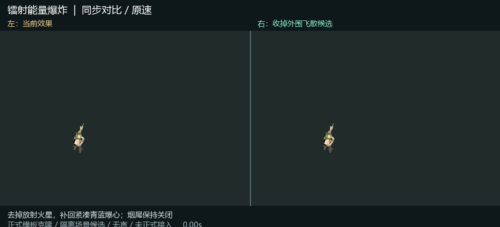
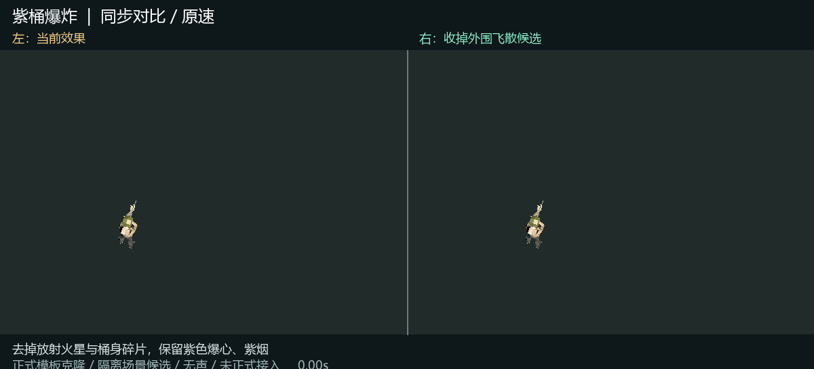
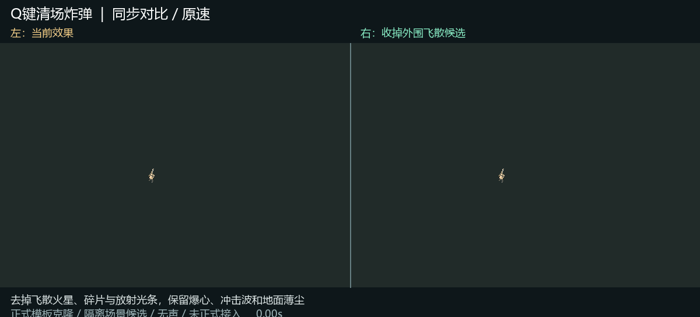
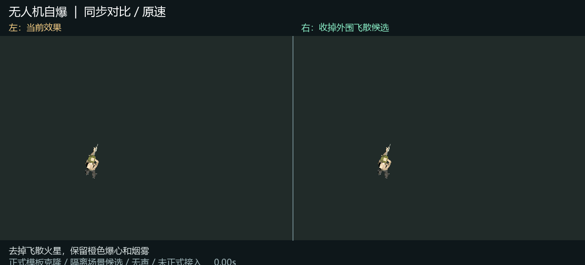
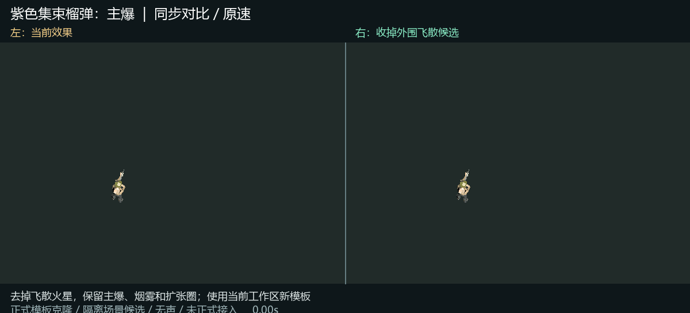
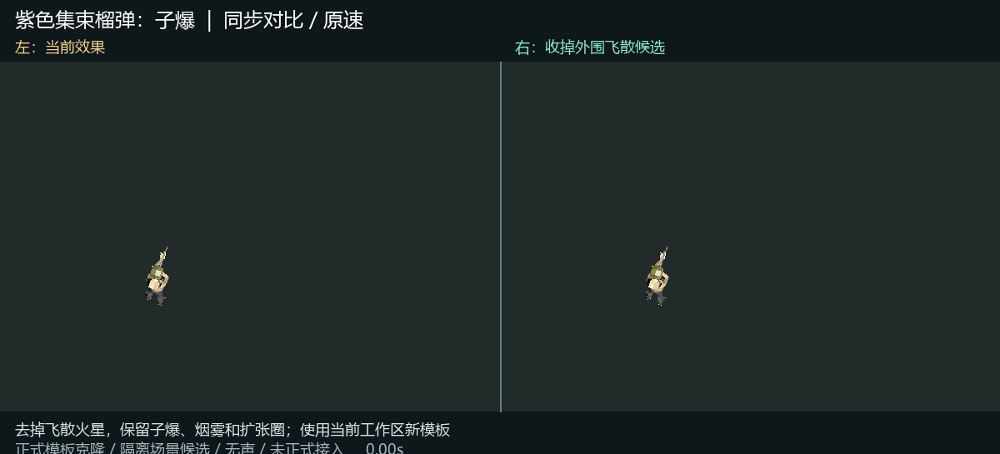
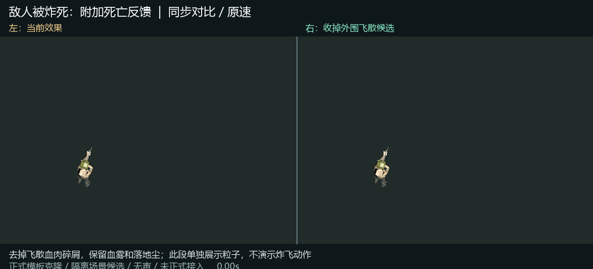
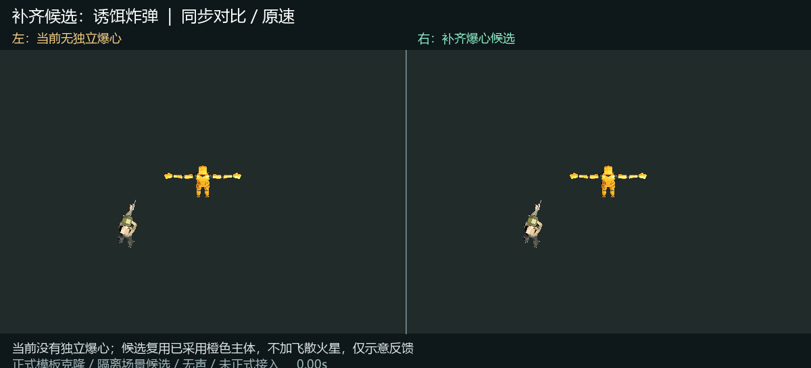
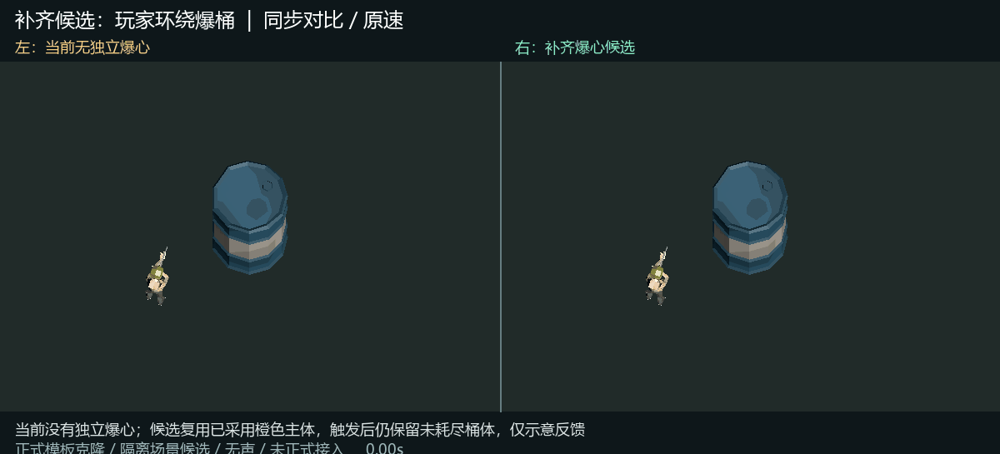

正式模板克隆，隔离场景动态候选；相同相机、角色参照与随机种子。无声，不是真人对局，未修改正式资源。每项2.4秒循环。
去掉放射火星，补回紧凑青蓝爆心；烟尾保持关闭

去掉放射火星与桶身碎片，保留紫色爆心、紫烟

去掉飞散火星、碎片与放射光条，保留爆心、冲击波和地面薄尘

去掉飞散火星，保留橙色爆心和烟雾

去掉飞散火星，保留主爆、烟雾和扩张圈；使用当前工作区新模板

去掉飞散火星，保留子爆、烟雾和扩张圈；使用当前工作区新模板

去掉飞散血肉碎屑，保留血雾和落地尘；此段单独展示粒子，不演示炸飞动作

当前没有独立爆心；候选复用已采用橙色主体，不加飞散火星，仅示意反馈

当前没有独立爆心；候选复用已采用橙色主体，触发后仍保留未耗尽桶体，仅示意反馈
